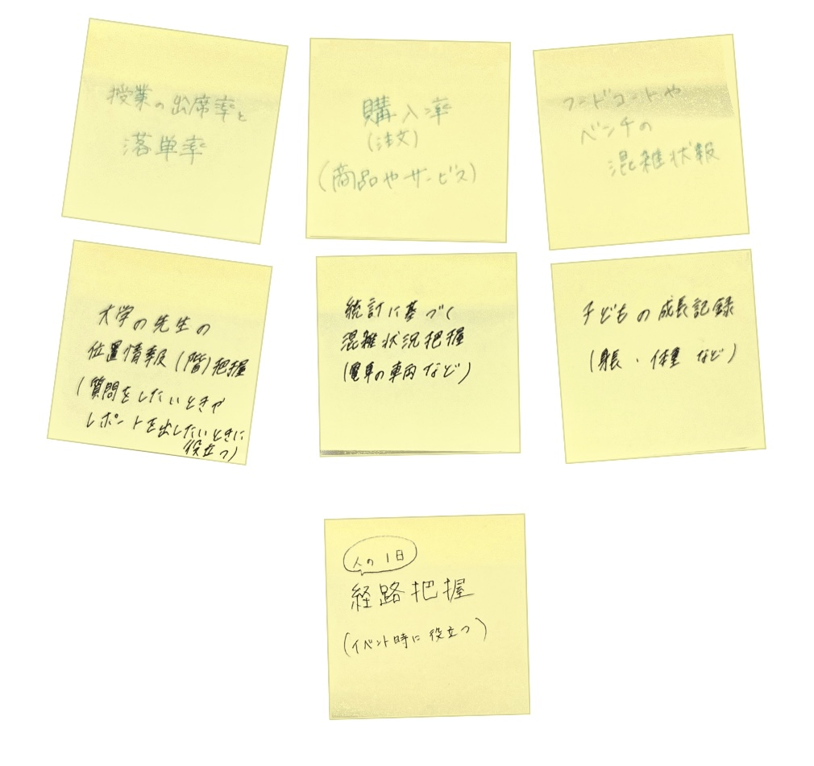

〖Assignment〗
＜IoT(データ保存)で何ができそうか？どのような価値あるものになるか？＞

・大学の先生が学校内のどの階にいるかのデータ保存 → 提出物を出したい時や質問しに行きたい時にデータを見れば
どの階にいることが多いのかをもとに探せば早く見つけることができる
・テーマパークやショッピングモールのフードコートやベンチの混雑情報のデータ保存→
そのデータを見た人が穴場の空いている場所に分散により混雑が改善されるのではないか。
・人の１日の経路のデータ保存 → テーマパークやイベントの時に空いている経路/よく混雑する経路の把握
→経路誘導などの際に役立つ(花火大会、ライブ)